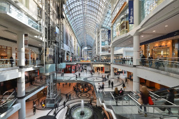

O mais famoso shopping da cidade, o Eaton Centre, está situado em um dos centros de compra mais importantes de Toronto, na Yong St com a Dundas. Em um espaço super agradável, há 230 lojas, entre internacionais e canadenses, para todos os tipos de gostos.
Localizado em uma das regiões mais nobres de Toronto, o Yorkdale Shopping Centre conta com mais de 250 lojas, que vão desde as principais canadenses, passando pelas famosas internacionalmente
De fácil localização (próximo à Dufferin Station) e ótimos preços, é possível encontrar lojas como H&M, Gap e Forever 21. O shopping também conta com o Walmart, bom para o turista que gosta de conhecer produtos alimentícios do local.